In the digital wave, imaging technology changes fast, and the feel of prints and ink is fading. But Epson has always held that a printed photograph has a soul, and can endure over the years. Since Epson introduced UltraChrome in 2005, it has worked with Epson UltraChrome certified studios. Aiming for what you see is what you get, it pushes high-end art reproduction and image output, and brings clients a gallery-grade art experience.
Sixteen years of craft, building quality with Epson
Hangzhou Leto Culture and Art Planning (Leto) stands out in UltraChrome printing. It has held Epson UltraChrome certification for more than ten years since 2012, and is a model in the field. After years of growth, Leto now has a 2,000 square meter studio and gallery. Along the way, Epson and Leto have refined their technology and craft, and serve government cultural projects, museums, and top artists.
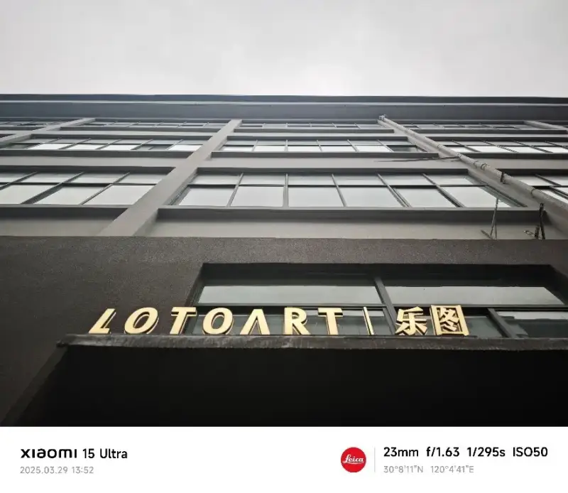
Leto studio
Curators of large shows, government offices, and artists hold high standards for output. To meet them, Leto has chosen Epson since its first machine, and the studio now holds more than ten Epson devices. Leto’s trust in Epson and Epson’s own innovation feed each other. The two grow together, and keep delivering high-quality work.
Studio head Liu Yiheng said: Our first Epson was the Stylus Pro 9880C. We later added the SureColor P9580, and last year the new SureColor P20580. Epson renders color accurately and the image stays fresh, so clients are happy with our output, and we trust Epson. Each upgrade has come with growth in Leto’s business.
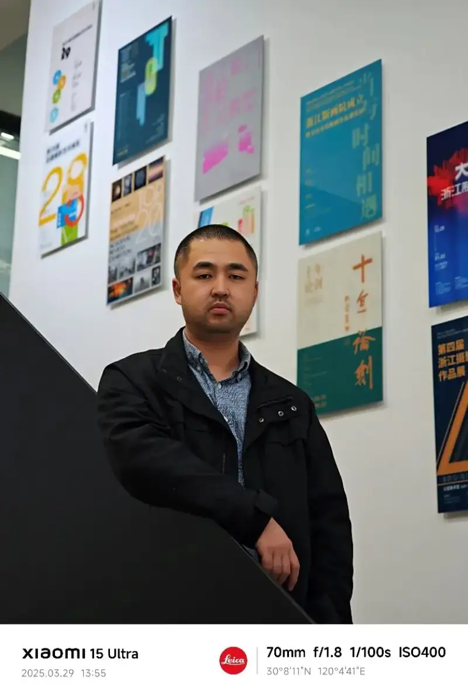
Studio head Liu Yiheng
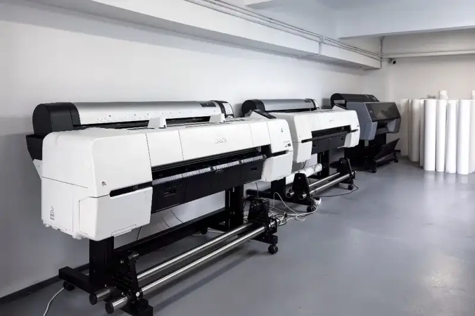
The Epson large-format devices in the Leto studio
The Epson SureColor P20580 as the key to Leto’s higher quality
With high standards for output, Leto was among the first to buy the SureColor P20580 (SC-P20580). Liu Yiheng rates its performance highly. The studio found that the SC-P20580 renders color more accurately and more vividly, and meets the highest client needs. This comes from its 12-color UltraChrome PRO12 pigment ink, which covers 99 percent of the Pantone gamut, for a true what you see is what you get.
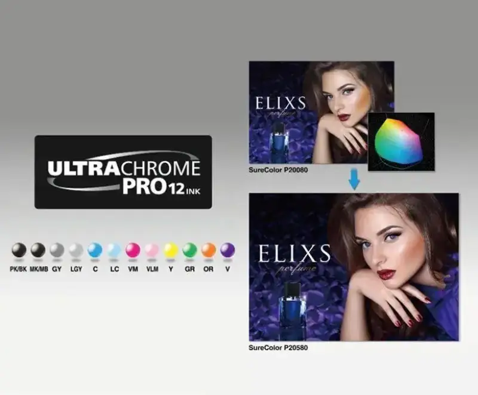
The SC-P20580 thin-xuan solution also solved our long problem of printing on thin paper, Liu said. The humid south warps paper, but the SC-P20580 handles more media, so we can print on 40g xuan paper. This fits art reproduction and client needs, and renders the work as faithfully as possible.
The SC-P20580 also uses a 1.6L ink pack, so staff change ink less often and output stays efficient. Along with Epson devices, Leto uses Epson textured art paper, ultra-smooth art paper, and high-quality matte paper, for better color and high-end output.
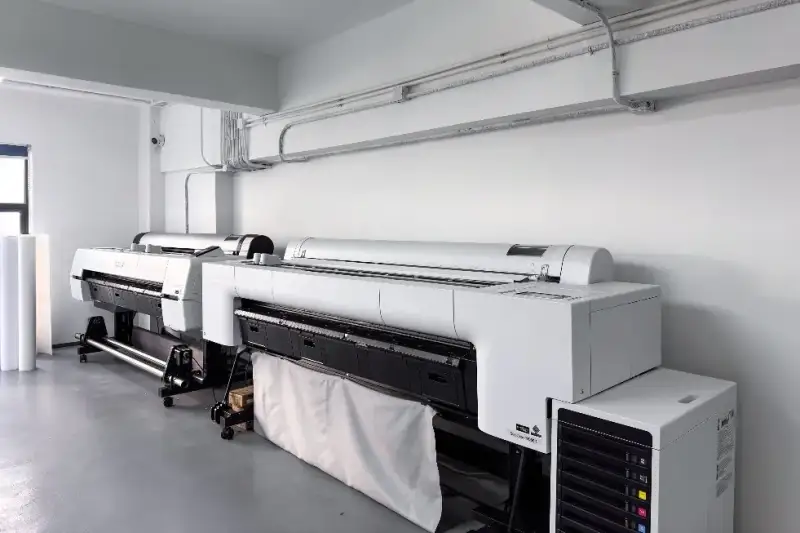
The SC-P20580 in the Leto studio
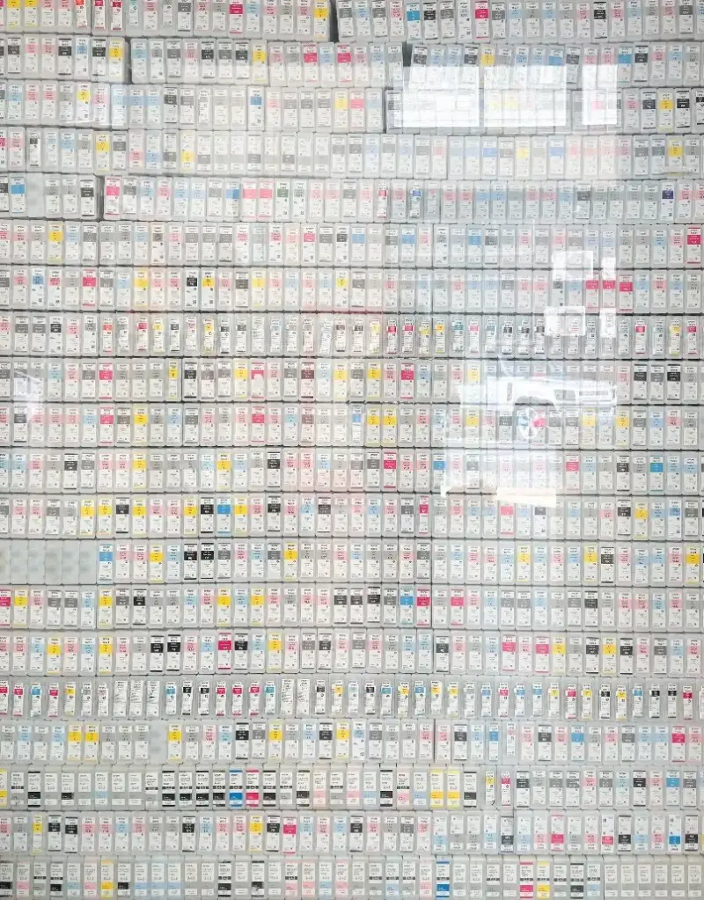
Leto studio
Accurate color earns client satisfaction
Accurate color is the core of UltraChrome printing. It directly sets the art and market value of images and art reproductions. Leto’s clients demand very high color fidelity. Epson’s wide gamut and accurate rendering let Leto meet that demand.
Leto also meets varied client needs with Epson gear. Liu said: Whether it is a show of a thousand prints or an artist’s extreme demand for color, we always use Epson large-format printers and original pigment ink. Their stability, accurate color, and fast output give works a high-grade finish, and help artists reach a true what you see is what you get. Each high-standard job has earned Leto recognition from clients and the field, and raised the value of every print.
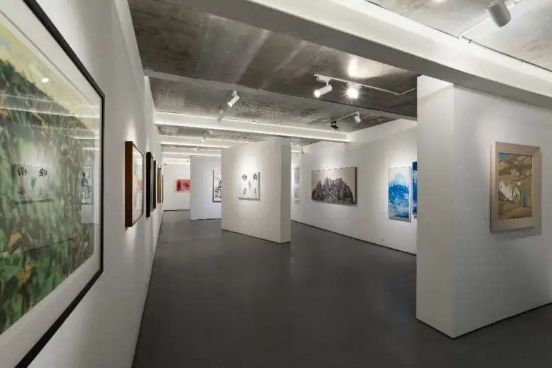
A broad business, exploring across fields
Leto has always grown in many directions. Besides its core work, it looked ahead and built creative digital products early. From printing T-shirts on the Epson SC-F2080, it now makes items such as fridge magnets and coasters. These products broaden Leto’s line and give artists more ways to show and spread their work.
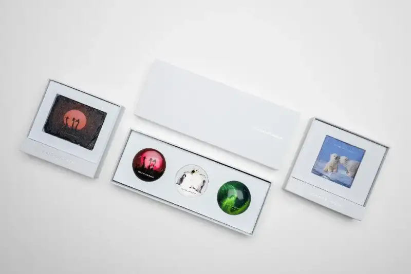
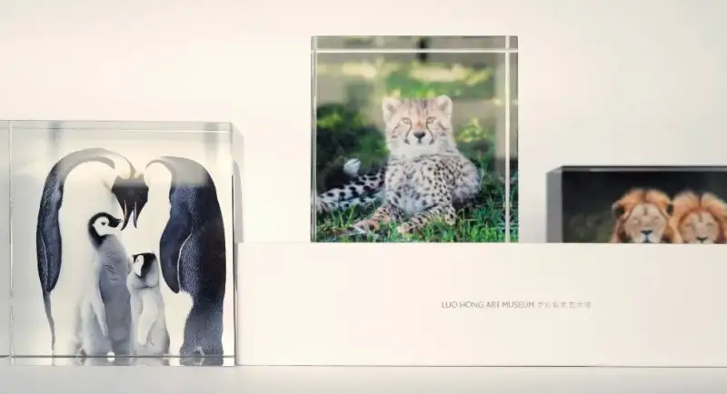
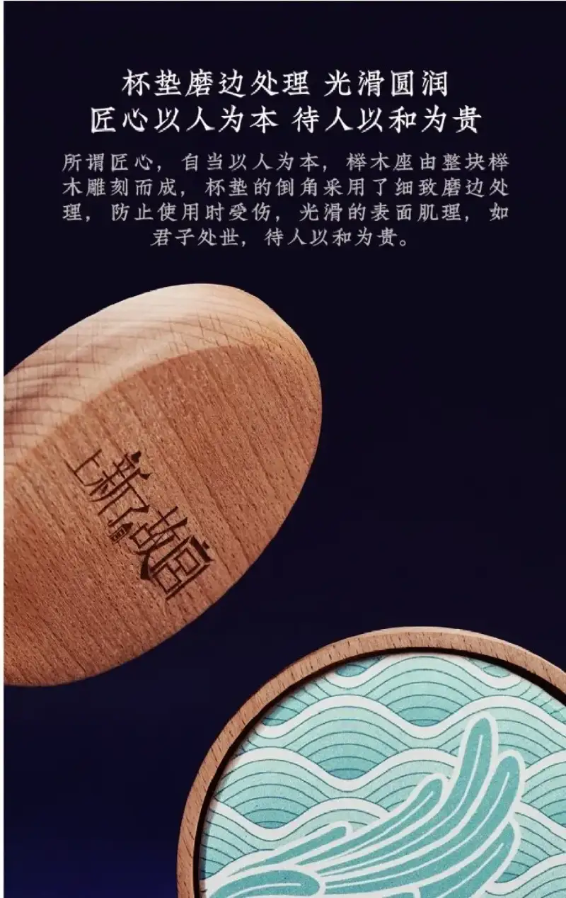
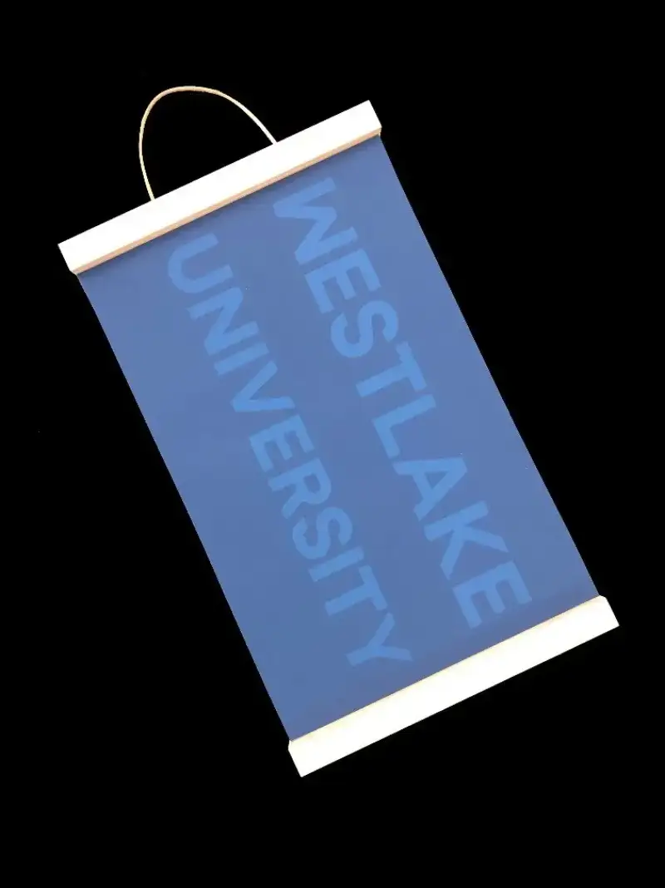
Products made by Leto
The work between Epson UltraChrome and Leto joins skill and quality. The two will keep working together, find more uses for UltraChrome, and bring high-end output to more people. Epson will follow a technology plus local strategy, refine its work, and partner with more certified studios to create more art and business value.
About Epson (China) Co., Ltd.
Epson entered China in the 1980s, through trade, then investment and plants, then full setup. After more than 40 years, it has built a full network of manufacturing, sales, and service.
Epson (China) Co., Ltd. was founded in 1998, with its head office in Beijing and 12 branches. As a regional head office, it oversees Epson’s investment and business in China*.
Epson’s business in China covers printers, scanners, and projectors, electronic components, and industrial robots. Its products, known for quality and low energy use, are loved by Chinese consumers. Based in China, Epson follows a spirit of challenge and innovation, brings advanced technology to China, and lets Chinese consumers enjoy the same experience as the world. Epson also supports Chinese environmental and education work, and is proud to be a good corporate citizen.
Epson (China) currently holds these qualifications:
In May 2004, Epson (China) was approved by the Ministry of Commerce as a regional head office.
ISO 14001 environmental management certification;
ISO 9001 quality management certification;
AAA-grade enterprise credit rating;
* Excluding Hong Kong, Macau, and Taiwan
About Epson
Epson is a global technology leader based in Japan, with annual sales of more than 1 trillion yen.
Epson’s mission is to create value through efficient, compact, and precise work, and enrich people and the planet. It keeps innovating in home and office printing, commercial and industrial printing, manufacturing, visual, and lifestyle. By 2050, Epson aims to be carbon negative and to use no exhaustible underground resources such as oil and metal.
global.epson.com/
about Epson
Epson is a global technology leader whose philosophy of efficient, compact and precise innovation enriches lives and helps create a better world. The company is focused on solving societal issues through innovations in home and office printing, commercial and industrial printing, manufacturing, visual and lifestyle. Epson's goal is to become carbon negative and eliminate use of exhaustible underground resources such as oil and metal by 2050.
Led by the Japan-based Seiko Epson Corporation, the worldwide Epson Group generates annual sales of more than JPY 1 trillion.
global.epson.com/